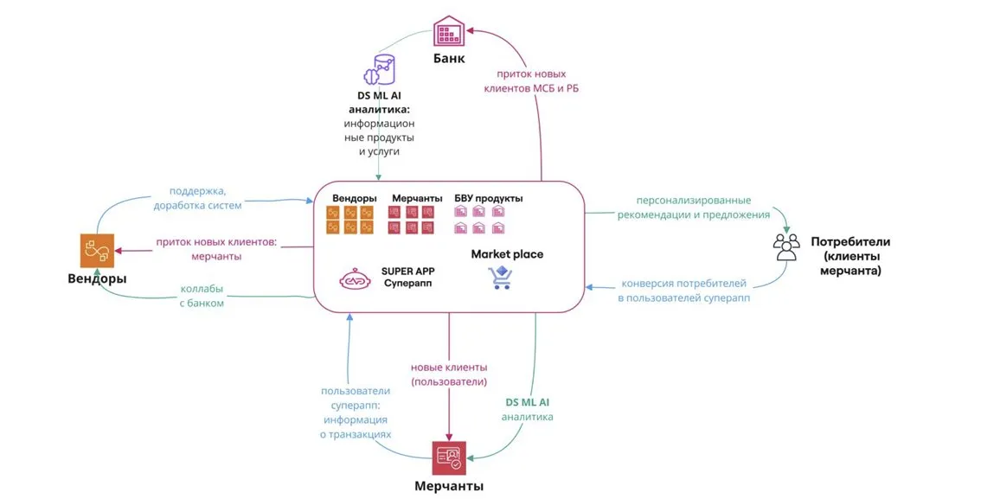
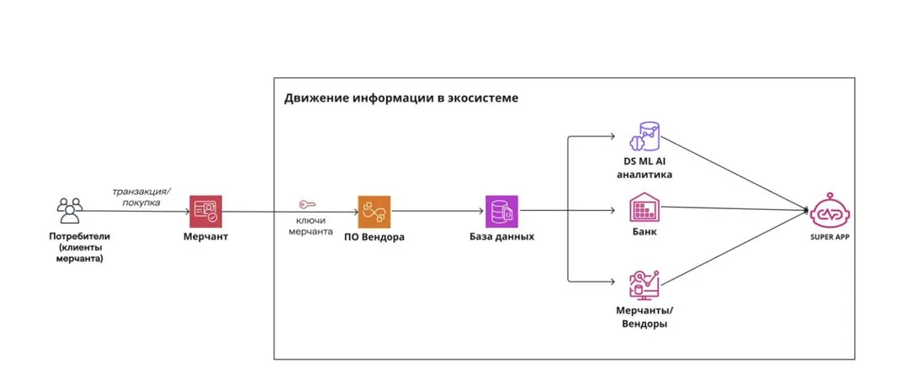
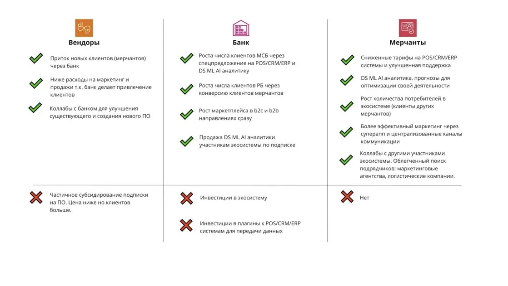

Предложение к рассмотрению о возможной модели
расширения роли банка за рамки финансового провайдера.
Структурные ограничения, с которыми сегодня сталкиваются банки в работе с сегментом МСБ.
Кредитные решения по сегменту МСБ опираются преимущественно на залоги и личные поручительства - поскольку денежные потоки, оборачиваемость и сезонность бизнеса клиента остаются вне поля зрения банка.
В результате значительная часть жизнеспособного МСБ остаётся вне доступа к оборотному финансированию.
В Центральной Азии и СНГ платформы потребительского типа (Kaspi, Uzum, Wildberries, Ozon) последовательно встраивают в свой контур платежи, программы лояльности, потребительское кредитование и ряд иных банковских функций.
При сохранении этой тенденции роль банка в цепочке создания ценности может сократиться до платёжного рельса в чужой экосистеме.
Прецеденты в других юрисдикциях и положение Узбекистана.
Краткий обзор аналогичных моделей в других юрисдикциях.
Uzum уже формирует потребительскую экосистему. По достижении критической массы сетевого эффекта вытеснить такого игрока становится крайне сложно, что подтверждается опытом региона.
Ориентировочное окно для формирования банк-ориентированной альтернативы. Кто первым агрегирует операционные данные МСБ - во многом определит конфигурацию рынка на ближайшие 5–10 лет.
Конфигурация экосистемы, в которой банк выступает центральным узлом.
Вендоры получают канал дистрибуции и сниженную стоимость привлечения клиента. Мерчанты - субсидированный доступ к инструментам уровня enterprise и предиктивной аналитике. Банк - структурированный поток операционных данных по каждому подключённому бизнесу.
Банк выступает узлом, через который выстраиваются отношения остальных сторон.
Оригинальная схема из исходного меморандума с детализацией потоков между всеми участниками.

Оригинальная схема информационного потока - от транзакции потребителя через ПО вендора и базу данных к аналитике, банку и супер-аппу.

Сравнение объёма информации по одному мерчанту.
Четыре направления эффекта, взаимно усиливающих друг друга.
Эффекты не складываются - они взаимно усиливают друг друга.
Полная видимость P&L открывает оборотное финансирование и предиктивный кредит при пониженном уровне риска.
Каждый подключённый мерчант приводит розничных клиентов; растущая база клиентов привлекает следующих мерчантов.
POS, склад, CRM, маркетинг и кредитование в едином контуре формируют высокие издержки переключения.
Снижение риска вытеснения банка маркетплейсами на роль платёжного рельса.
При наличии операционных данных мерчанта банк получает возможность предлагать оборотное финансирование, овердрафты и предсказывать кассовые разрывы заблаговременно - без необходимости опираться исключительно на залоговое обеспечение.
Каждый подключённый мерчант приводит в супер-апп своих розничных клиентов; растущая база клиентов делает платформу более привлекательной для следующих мерчантов.
Когда POS, складской учёт, CRM, маркетинговый контур и кредитование мерчанта проходят через единую платформу банка, переход к альтернативному поставщику требует пересборки всей операционной модели бизнеса.
Сбалансированная оценка выгоды и издержек по каждому участнику.
| Участник | Выгода | Издержки и ограничения |
|---|---|---|
| Банк | Информационный ров · рост и качество кредитного портфеля · новые потоки доходов · защитная позиция | Существенный capex · компетенции вне профильной деятельности |
| Мерчанты (МСБ) | Доступ к инструментам уровня enterprise по сниженной цене · поток клиентов из супер-аппа · упрощённый доступ к кредиту | Передача операционных данных третьей стороне · зависимость от платформы |
| Вендоры | Снижение стоимости привлечения клиента · совместная разработка продукта | Риск дезинтермедиации в долгосрочной перспективе |
| Розничные клиенты | Персонализация · единая программа лояльности · удобство | Кросс-платформенное использование данных |
| B2B-сервисы | Канал дистрибуции | Стандартизация условий · давление на тарифы |
В долгосрочной перспективе наибольшие издержки несут вендоры - этот вопрос требует отдельной проработки в части устойчивости партнёрской модели.
Детальное представление по трём ключевым участникам - вендоры, банк, мерчанты. Зелёные отметки - выгоды, красные - затраты и инвестиции.

Риски, которые требуют отдельной проработки до принятия решения о реализации.
Стратегическая логика модели представляется обоснованной. Реализация связана с рядом существенных рисков, которые мы считаем правильным обозначить открыто.
Сильные POS/CRM-вендоры могут отказаться от участия, оценив долгосрочные риски потери позиции - что снизит качество партнёрской базы.
Совмещение функций кредитора, держателя данных конкурентов, оператора маркетплейса и владельца клиентских отношений требует проработки совместно с регулятором.
Модель требует одновременной компетенции в шести существенно различных дисциплинах - от SaaS-партнёрств до маркетплейс-операций.
Модель достигает устойчивости только при определённом масштабе. Требуется количественная оценка стартовых субсидий и периода выхода на самоокупаемость.
Подписочная монетизация аналитики - наиболее уязвимое допущение в текущей модели. Square и Ant в своё время предоставляли аналитику бесплатно, монетизируясь через кредитный продукт.
Основной вывод и предложение по дальнейшим шагам.
С учётом темпов формирования потребительской экосистемы Uzum, принципиальный ответ на этот вопрос представляется целесообразным в горизонте ближайших 18–24 месяцев.
Мы готовы вернуться с углублённым разбором по любому из направлений, которое представляет интерес:
Условия подключения, защита от дезинтермедиации.
Оценка эффекта на качество и объём портфеля.
Подробный разбор моделей Uzum и Kaspi применительно к контексту.
Последовательность ввода с учётом холодного старта.